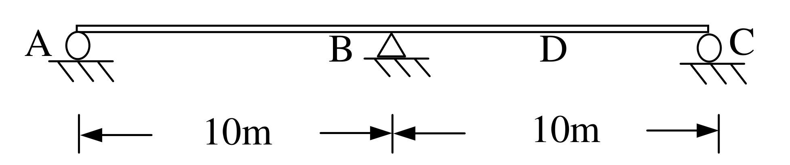
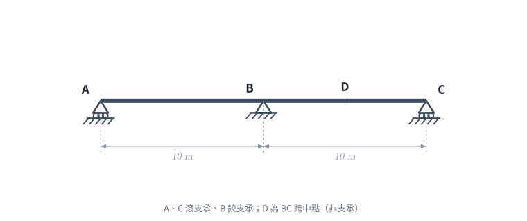
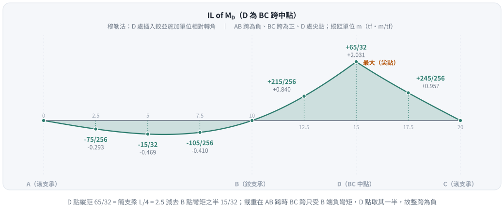

📄 題目正本（考卷原文、附圖與判讀清單；不含解法）
SA-2005-3 題目正本
本檔只記錄考卷上寫了什麼、圖上畫了什麼，不含任何解法。解析見同資料夾
SA-2005-3.md。
判讀清單經使用者確認前，狀態為「待確認」；確認後本檔原則上不再修改（改動須回考卷原圖並記 log）。
| 項目 | 內容 |
|---|---|
| 考卷 | raw/exams/SA-2005_結構學.pdf，第 1 頁（正面），全一張，第三題（圖三） |
| 考年 | 2005（民國九十四年）專技高考結構工程技師「結構學」 |
| 配分 | 25 分 |
| 附圖 | SA-2005-3-fig-2.png（2026-11-07 重新擷取）；既有 SA-2005-3-fig-1.png |
| 判讀狀態 | 已確認（2026-11-07 使用者確認。原轉錄：2026-11-07 轉錄；PyMuPDF 110 dpi 整頁＋450–1200 dpi 局部放大；考卷可抽文字，逐字原文以 PDF 文字層核對；盲讀於開啟解析前完成） |
1. 考卷原文（逐字）
三、二跨之靜不定梁如圖三，各梁之楊氏係數 E 及慣性矩 I 為常數，試每隔 2.5m 畫出 BC 跨度中點 D 之彎矩感應線（influence line）。（25 分）
（「感應線」照考卷原文，即影響線。）
2. 考卷給的公式、附表與參數
- 考卷沒有給任何參考公式或附表。
- 考卷沒有給 E、I 數值（只說為常數）。
- 卷首注意事項：㈠不必抄題，作答時請將試題題號及答案依照順序寫在試卷上，於本試題紙上作答者，不予計分。㈡可以使用電子計算器，但需詳列解答過程。
- 考試時間：2 小時。
3. 附圖

證據圖 SA-2005-3-fig-2.png（2026-11-07 自考卷 500 dpi 重新擷取）；既有 SA-2005-3-fig-1.png 帶有滑鼠游標（手形游標在「圖三」字樣上，未壓到構件），保留不改。
圖面文字照錄：A、B、D、C、10m、10m、圖三
4. 判讀清單
| # | 項目 | 判讀 | 圖上／題文依據 | 把握 |
|---|---|---|---|---|
| 1 | 座標 | A(0)、B(10)、C(20)，D(15)，單位 m | 尺寸線 10m｜10m；D 為題文「BC 跨度中點」，圖上 D 字母位置量得約 15.0 m | 確定 |
| 2 | 支承 A | 滾支承（圓圈＋剖線） | 450 dpi | 確定 |
| 3 | 支承 B | 鉸支承（三角形＋剖線） | 450 dpi | 確定 |
| 4 | 支承 C | 滾支承（圓圈＋剖線） | 450 dpi | 確定 |
| 5 | 梁 | A–C 連續，無內鉸；EI 常數 | 梁線連續（雙線繪製）；題文 | 確定 |
| 6 | 所求 | D 點彎矩影響線，每隔 2.5 m 計算一個縱座標（x = 0、2.5、…、20 m 共 9 點） | 題文「每隔 2.5m 畫出」 | 確定（解讀）；使用者確認 |
| 7 | 靜不定度 | 一度靜不定 | 三個垂直支承 | 確定 |
轉錄：2026-11-07（SA-U1-3 題目正本推廣・批 1）
確認：2026-11-07 使用者確認
考題編號：[SA-2005-3]
主分類： SA-U1-3 靜定及靜不定結構影響線
副分類： 無
分析法： 影響線 / 三彎矩方程式
標籤： 影響線, 連續梁, 三彎矩方程式, Müller-Breslau原理
1. 題目（考卷原文見題目正本）
考卷原文、公式／附表、附圖與判讀清單（已確認）見
SA-2005-3-problem.md。本節只列解題時最容易讀錯的地方與本解使用的記號；題意以題目正本為準。

重繪自考卷附圖，依判讀清單 #1–#7 重繪。攔：B、C 支承讀錯、D 位置讀錯。
常見誤讀
| 項目 | 正確判讀 | 常見誤讀 |
|---|---|---|
| B 支承 | 鉸支承（中間支承） | 滾支承 |
| D 位置 | BC 跨中點，x = 15 m | AB 跨中點 |
| 「感應線」 | 考卷用語，即影響線 | — |
本解記號： 縱座標每隔 2.5 m 一點（x = 0、2.5、…、20 m 共 9 點）；記號與正負號約定沿用 §4。
2. 考題核心精神與出題者意圖 (Core Concepts & Examiner's Intent)
本題主要測驗考生對於靜不定結構影響線的計算與繪製能力。
出題者意圖包含：
- 影響線的基本概念：理解影響線的縱座標代表單位載重移動至該點時，特定位置（D點）之內力（彎矩）大小。
- 靜不定分析方法：對於一次靜不定結構，需能熟練運用力法（如三彎矩方程式）或位移法求出多餘反力（如支承 B 的彎矩 $M_B$）。
- 內力疊加原理：在求出 $M_B$ 後，利用靜力平衡或疊加法（簡單梁彎矩圖 + 端點彎矩影響）求出 D 點彎矩 $M_D$。
3. 解題戰略地圖與陷阱分析 (Strategic Roadmap & Trap Analysis)
戰略地圖：
- 建立模型：考慮單位載重 $P=1$ 在距離 A 點 $x$ 處移動。
- 計算 $M_B$：利用三彎矩方程式，分別針對載重在 AB 跨 ($0 \le x \le 10$) 與 BC 跨 ($10 \le x \le 20$) 列式，求出 $M_B$ 隨 $x$ 變化的函數。
- 計算 $M_D$：
- 當 $P=1$ 在 AB 跨時，BC 跨無外力，D 點彎矩僅由 $M_B$ 貢獻，即 $M_D = M_B / 2$。
- 當 $P=1$ 在 BC 跨時，D 點彎矩等於「簡支梁 BC 受載重時 D 點的彎矩 $M_{D,simple}$」加上「$M_B$ 產生的彎矩 $M_B / 2$」。
- 計算縱座標：代入 $x = 0, 2.5, 5, 7.5, 10, 12.5, 15, 17.5, 20$，求出各點的 $M_D$ 值，並整理成表。
陷阱分析：
- 三彎矩方程式的右式載重項：載重項 $\frac{6A\bar{x}}{L}$ 的距離 $\bar{x}$ 必須是由「外側支承」量至彎矩圖形心的距離，代入時容易搞錯 $a$ 與 $b$ 的順序。
- D點彎矩的疊加：當載重在 BC 跨上時，絕對不能忘記加上簡支梁效應 $M_{D,simple}$。
- 符號約定：計算出的 $M_B$ 通常為負值（上緣受拉），疊加時必須帶有正確的符號。
3.5 變數層次分析 (Variable Hierarchy Analysis)
最終目標
求出單位集中載重 $P=1$ 通過連續梁時，BC 跨中點 D 之彎矩 $M_D$ 於各 2.5m 節點的精確數值。
本題關鍵公式（依計算順序）
-
三彎矩方程式：
$$ M_A L_1 + 2 M_B (L_1 + L_2) + M_C L_2 = - \frac{6 A_1 a_1}{L_1} - \frac{6 A_2 b_2}{L_2} $$ -
載重在 AB 跨時的 $M_B$：
$$ \boxed{M_B} = - \frac{P \cdot x \cdot (10-x) \cdot (10+x)}{10 \cdot 40} $$ -
載重在 BC 跨時的 $M_B$（令 $x' = x-10$）：
$$ \boxed{M_B} = - \frac{P \cdot x' \cdot (10-x') \cdot (20-x')}{10 \cdot 40} $$ -
疊加法求 D 點彎矩：
$$ \boxed{M_D} = M_{D,simple} + \frac{\boxed{M_B}}{2} $$
L1：題目直接給定
- 符號 $L_1$ ∣ 數值 $10\text{ m}$ ∣ 說明 AB 跨度
- 符號 $L_2$ ∣ 數值 $10\text{ m}$ ∣ 說明 BC 跨度
- 符號 $P$ ∣ 數值 $1$ ∣ 說明 單位載重
- 符號 $x_D$ ∣ 數值 $15\text{ m}$ ∣ 說明 D 點距離 A 點位置
L2：需知識點推導
三彎矩方程式計算
- 符號 $M_A, M_C$ ∣ 公式 $M_A = M_C = 0$ (鉸/滾端) ∣ 卡關?
- 符號 $M_B$ (P在AB跨) ∣ 公式 $-\frac{x(100-x^2)}{400}$ ∣ 卡關?
- 符號 $M_B$ (P在BC跨) ∣ 公式 $-\frac{x'(10-x')(20-x')}{400}$ ∣ 卡關?
D點彎矩計算
- 符號 $M_{D,simple}$ ∣ 公式 簡支梁跨中彎矩公式 ∣ 卡關?
- 符號 $M_D$ ∣ 公式 $M_{D,simple} + M_B / 2$ ∣ 卡關?
L3：深層知識（不懂就卡住）
- 知識點 三彎矩方程式右式 ∣ 說明 $\frac{6Aa}{L} = \frac{Pab(L+a)}{L}$，需注意 $a$ 為距離遠端支承之長度 ∣ 卡關?
- 知識點 影響線定義 ∣ 說明 IL 上 $x$ 處的數值代表載重在 $x$ 處時目標函數的值 ∣ 卡關?
4. 步驟化詳細計算過程 (Step-by-Step Detailed Calculation)
Step 1：建立三彎矩方程式
對於 A-B-C 連續梁，因 A、C 為端點滾支承，故 $M_A = 0$、$M_C = 0$。
設 $L_1 = 10\text{ m}$，$L_2 = 10\text{ m}$，套用三彎矩方程式：
$$ M_A L_1 + 2M_B(L_1 + L_2) + M_C L_2 = - \frac{6A_1 a_1}{L_1} - \frac{6A_2 b_2}{L_2} $$
$$ 0 + 2M_B(10 + 10) + 0 = 40M_B = - \sum \frac{P a b (L+a)}{L} $$
Step 2：計算單位載重 $P=1$ 在 AB 跨 ($0 \le x \le 10$) 時的 $M_B$ 與 $M_D$
設載重距離 A 點為 $x$，則在 AB 跨中，距外側支承 A 之距離 $a = x$，距內側支承 B 之距離 $b = 10 - x$。
三彎矩方程式右式僅有第一跨有載重：
$$ 40M_B = - \frac{1 \cdot x \cdot (10-x) \cdot (10+x)}{10} = - \frac{x(100-x^2)}{10} $$
$$ M_B = - \frac{x(100-x^2)}{400} $$
此時 BC 跨無任何垂直外力，僅受 B 點彎矩 $M_B$ 作用。由靜力平衡，BC 跨之彎矩呈線性分佈，從 B 點的 $M_B$ 遞減至 C 點的 0。
D 為 BC 中點，故：
$$ M_D = \frac{M_B}{2} = - \frac{x(100-x^2)}{800} $$
各點縱座標計算 ($0 \le x \le 10$)：
- $x = 0$：$M_D = 0$
- $x = 2.5$：$M_B = - \frac{2.5(100 - 6.25)}{400} = - \frac{75}{128} \approx -0.586$，$M_D = - \frac{75}{256} \approx \boxed{-0.293}$
- $x = 5.0$：$M_B = - \frac{5(100 - 25)}{400} = - \frac{15}{16} = -0.9375$，$M_D = - \frac{15}{32} \approx \boxed{-0.469}$
- $x = 7.5$：$M_B = - \frac{7.5(100 - 56.25)}{400} = - \frac{105}{128} \approx -0.820$，$M_D = - \frac{105}{256} \approx \boxed{-0.410}$
- $x = 10.0$：$M_B = 0$，$M_D = \boxed{0}$
Step 3：計算單位載重 $P=1$ 在 BC 跨 ($10 \le x \le 20$) 時的 $M_B$ 與 $M_D$
設載重距離 B 點為 $x'$ ($x' = x - 10$)，則距內側支承 B 之距離為 $x'$，距外側支承 C 之距離為 $b = 10 - x'$。
對於第二跨，公式中的 $a$ 為距離遠端 C 之距離，故 $a = 10 - x'$，$b = x'$。
$$ 40M_B = - \frac{1 \cdot (10-x') \cdot x' \cdot (10 + 10 - x')}{10} = - \frac{x'(10-x')(20-x')}{10} $$
$$ M_B = - \frac{x'(10-x')(20-x')}{400} $$
D 點彎矩可視為「簡支梁 BC 在載重下的彎矩 $M_{D,simple}$」與「支承彎矩 $M_B$ 產生的彎矩」之疊加：
$$ M_D = M_{D,simple} + \frac{M_B}{2} $$
其中 $M_{D,simple}$ 計算如下：
- 若載重在 B、D 之間 ($0 \le x' \le 5$)：$M_{D,simple} = R_C \cdot 5 = \frac{x'}{10} \cdot 5 = \frac{x'}{2}$
- 若載重在 D、C 之間 ($5 \le x' \le 10$)：$M_{D,simple} = R_B \cdot 5 = \frac{10-x'}{10} \cdot 5 = \frac{10-x'}{2}$
各點縱座標計算 ($10 < x \le 20$)：
-
$x = 12.5$ ($x'=2.5$)：
$M_B = - \frac{2.5(7.5)(17.5)}{400} = - \frac{105}{128} \approx -0.820$
$M_{D,simple} = \frac{2.5}{2} = 1.25$
$M_D = 1.25 - \frac{105}{256} = \frac{320 - 105}{256} = \frac{215}{256} \approx \boxed{0.840}$ -
$x = 15.0$ ($x'=5.0$)：
$M_B = - \frac{5(5)(15)}{400} = - \frac{15}{16} = -0.9375$
$M_{D,simple} = \frac{5}{2} = 2.5$
$M_D = 2.5 - \frac{15}{32} = \frac{80 - 15}{32} = \frac{65}{32} = \boxed{2.03125}$ -
$x = 17.5$ ($x'=7.5$)：
$M_B = - \frac{7.5(2.5)(12.5)}{400} = - \frac{75}{128} \approx -0.586$
$M_{D,simple} = \frac{10-7.5}{2} = 1.25$
$M_D = 1.25 - \frac{75}{256} = \frac{320 - 75}{256} = \frac{245}{256} \approx \boxed{0.957}$ -
$x = 20.0$ ($x'=10.0$)：
$M_B = 0$，$M_D = \boxed{0}$
Step 4：影響線座標總表
| $x$ (m) | 點位 | $M_D$ (tf-m/tf) | 分數值 |
|---|---|---|---|
| 0 | A | 0 | 0 |
| 2.5 | -0.293 | -75/256 | |
| 5.0 | -0.469 | -15/32 | |
| 7.5 | -0.410 | -105/256 | |
| 10.0 | B | 0 | 0 |
| 12.5 | 0.840 | 215/256 | |
| 15.0 | D | 2.031 | 65/32 |
| 17.5 | 0.957 | 245/256 | |
| 20.0 | C | 0 | 0 |
(依據上述數值繪製出兩跨之平滑曲線，在 D 點會有尖峰轉折)

圖 2 $M_D$ 影響線（九個縱距與 Step 4 總表逐一相符）。攔的是把 AB 跨畫成 0，以及把 D 點峰值寫成簡支梁的 $L/4 = 2.5$ —— 連續梁要扣掉 $M_B/2 = \frac{15}{32}$，得 $\frac{65}{32}$。
5. 關鍵爭議點與進階探討 (Critical Issues & Advanced Discussion)
-
Müller-Breslau 原理的應用：
本題雖然使用三彎矩方程式（力法）計算十分快捷精確，但若從 Müller-Breslau 原理的角度來看，將 D 點切開並加入鉸接，施加單位相對旋轉角 $\Delta \theta_D = 1$ 後的彈性曲線即為 $M_D$ 的影響線。因為原結構為一次靜不定，在 D 點加鉸後變成「靜定結構」，此時可以完全使用共軛梁法求出該靜定結構的變形曲線，兩種方法所得結果完全一致，可用作考場上的互相驗算。 -
影響線形狀特徵：
在 AB 跨，影響線皆為負值，代表載重在 AB 跨時會使 BC 跨產生上凸變形，導致 D 點產生負彎矩；在 BC 跨，D 點附近影響線為正值，且在 D 點有明顯的尖點（非平滑），這是因為內力影響線在所求截面處必定有相對位移（此題為相對轉角）的不連續。
修正日期：2026-11-07（§1 改為指向題目正本並放重繪附圖（figs/SA-2005-3-fig-1-problem.svg）、加常見誤讀；圖由 gen_SA-2005-3.py 產生，可重跑）
圖解補繪：2026-11-07（圖 2 影響線，向量圖，腳本 gen_SA-2005-3_il.py，可重跑）